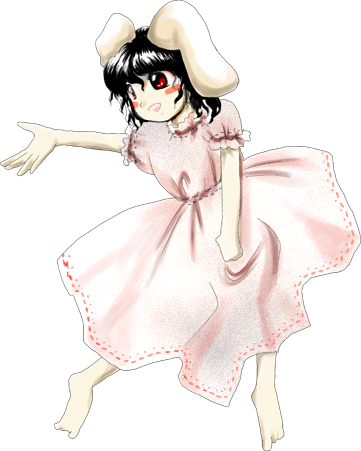

Tewi é frequentemente vista como:
Travessa – adora pregar peças, criar armadilhas e se divertir às custas dos outros.
Esperta – possui uma astúcia incrível para se safar de enrascadas e conseguir o que quer.
Despreocupada – prefere levar a vida de forma leve, evitando responsabilidades excessivas.
Ela transmite a sensação de uma coelhinha inocente e fofa, mas que esconde uma mente extremamente maliciosa e trapaceira.
🧠 Astúcia selvagem
Tewi é muito mais inteligente e experiente do que aparenta:
Cria armadilhas perfeitas no bambual
Sabe como manipular situações a seu favor
Raramente é enganada por outras criaturas
Sua esperteza garantiu a sobrevivência e a liderança de seu bando por séculos.
🎭 Comportamento brincalhão
Ela demonstra traços típicos de uma trapaceira nata:
Gosta de jogos e apostas onde sempre leva vantagem
Interage com os humanos vendendo amuletos da sorte
Pode sumir de repente quando a situação fica séria
Seu jeito zombeteiro e alegre é sua marca registrada.
🌿 Vida no bambual
Tewi vive e lidera no Bambual dos Perdidos:
Passa muito tempo correndo ao ar livre e cavando buracos
Comanda milhares de coelhos terrestres da região
Protege seu território confundindo os invasores com mentiras e caminhos errados
Ela prefere a densidade da floresta de bambu, onde conhece cada centímetro do chão.
🤝 Relação com os outros
Tewi interage de forma interesseira e divertida com Gensokyo:
Tem um acordo de cooperação com Eirin e a Princesa Kaguya em Eientei
Adora irritar e pregar peças em Reisen Udongein Inaba
Trata os humanos como clientes fáceis para seus negócios de boa sorte
Apesar de ser uma grande trapaceira, ela não é genuinamente má e protege os coelhos com unhas e dentes.
Líder dos Coelhos Terrestres
Tewi é a líder soberana de todos os coelhos da terra que habitam o Bambual dos Perdidos, gerenciando o bando com mãos de ferro por trás dos sorrisos.
Vendedora de Amuletos e Charlatã
Ela frequentemente fabrica e vende amuletos de boa sorte para os humanos da Vila, aproveitando-se de sua fama mística.
Manipulação da boa sorte
O principal poder de Tewi é trazer imensa fortuna para quem ela quiser (ou para si mesma):
Pode abençoar pessoas com sorte em jogos e caminhos
Usa sua aura afortunada para escapar de ataques e desastres
Consegue fazer com que armadilhas complexas funcionem perfeitamente no momento exato
Esse poder é resultado de sua longa existência como um coelho místico da sorte.
Mestre em armadilhas
Ela possui uma habilidade impecável para cavar e camuflar buracos e armadilhas, das quais nem mesmo youkais poderosos conseguem escapar facilmente.
Voo
Como um youkai antigo e fortalecido, Tewi consegue flutuar e saltar pelos ares com incrível agilidade.
Longevidade e Vitalidade Terrestre
Por viver há mais de mil anos na terra, Tewi possui uma saúde de ferro e sentidos aguçados que a alertam do perigo antes que ele aconteça.
Mesmo parecendo apenas uma garotinha indefesa com orelhas de coelho, sua sorte absurda e mente ardilosa fazem dela uma oponente irritantemente difícil de capturar.

Espécie:Lunaria
Título:Coelha Nascida na Terra